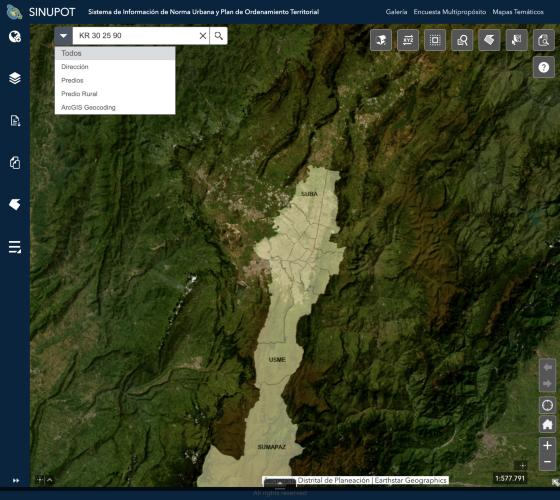
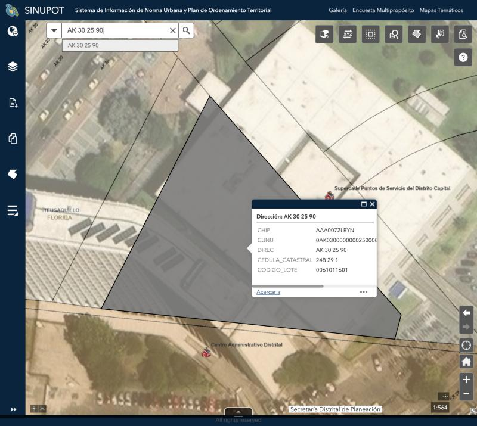
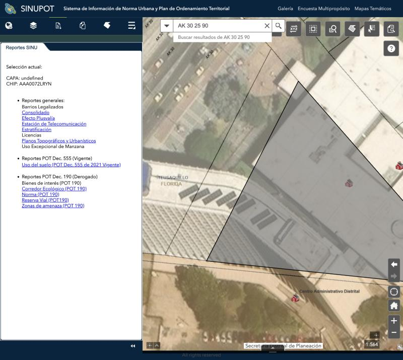
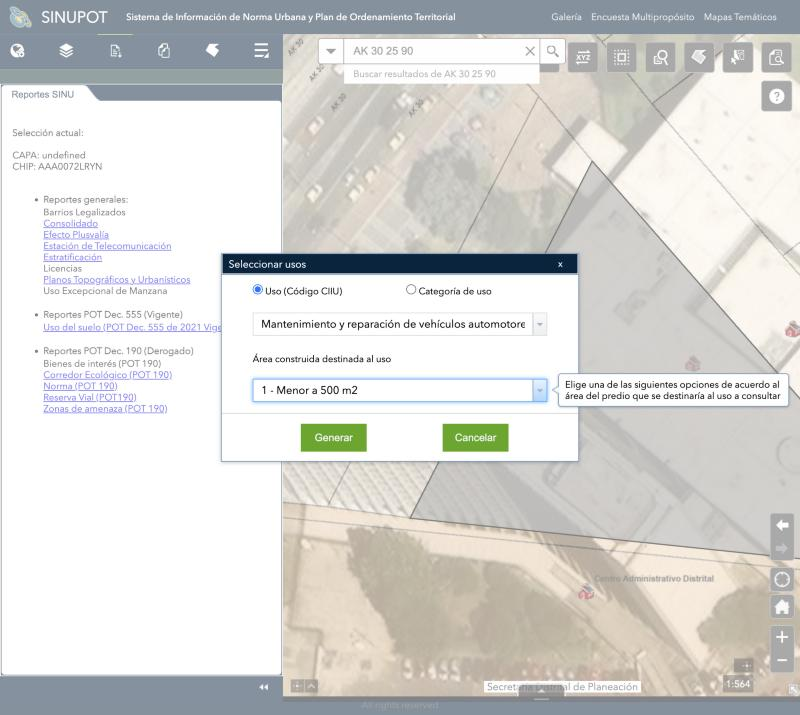
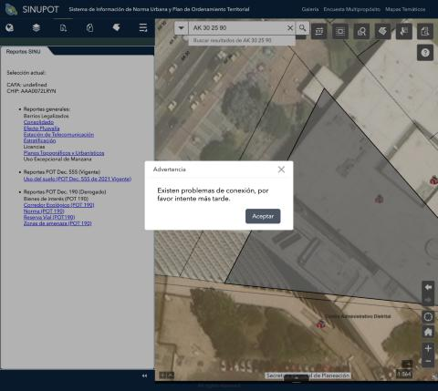

Paso 1 · Escoger el local · Bogotá
Documento del predio y uso del suelo
Antes de firmar el arriendo, saca los datos exactos del local, descarga su reporte de uso del suelo en el mapa oficial de Bogotá (SINUPOT) y confírmalo con el concepto de la curaduría. Así sabes si ahí se pueden lavar motos.
Qué vas a necesitar
- Dirección exacta del local (como sale en el recibo del predial, no la del aviso).
- CHIP: el código del predio en Bogotá. Empieza por
AAA. - Matrícula inmobiliaria: el número del predio en la oficina de registro (por ejemplo, 50C-1234567).
Cuánto cuesta
$127.083 COP$23.000 COP del certificado de tradición + $104.083 COP del concepto. El mapa y los datos de Catastro son gratis.
Cuánto tarda
1 hora + hasta 15 días hábilesUna hora en internet. La curaduría tiene hasta 15 días hábiles.
Paso a paso
-
Consigue los 3 datos del local (gratis)
Pídele al dueño una foto del recibo del impuesto predial del local. Ahí salen el CHIP, la dirección y, por lo general, la matrícula. Es gratis: él ya lo tiene.
Si solo tienes la dirección, saca el CHIP tú mismo, sin registrarte: entra a Catastro en Línea ↗ y escoge «Obtén el CHIP de un predio». Escribe la dirección y te sale el CHIP.
Otra opción es el certificado catastral, también gratis. Se descarga en Catastro en Línea con usuario registrado, o en la página de Catastro con «Pregúntale a Catia», escribiendo: «requiero descargar el certificado catastral». Lo saca el propietario, así que pídeselo al dueño.
✔ Listo cuando: tienes anotados dirección, CHIP y matrícula.
-
Saca el certificado de tradición y libertad ($23.000 COP)
Entra a certificados.supernotariado.gov.co ↗, escribe la matrícula inmobiliaria, paga $23.000 COP y descarga el PDF.
Te sirve dos veces: la curaduría lo pide (con menos de 30 días) y te muestra quién es el dueño de verdad y si el local tiene embargos. Sácalo solo en esa página oficial: no se lo compres a páginas particulares.
✔ Listo cuando: tienes el PDF guardado y el dueño que aparece es quien te va a arrendar.
-
Busca el predio en SINUPOT (gratis)
SINUPOT es el mapa oficial de la Secretaría Distrital de Planeación. Míralo primero en este video (2:18):
▶ Video oficial de la Secretaría Distrital de Planeación: cómo buscar un predio en SINUPOT · 2:18. ▶ Video oficial de la Secretaría Distrital de Planeación (2:18): https://youtu.be/YTk-pPtVYfQ
Ahora hazlo tú, mejor en computador:
- Abre sinu.sdp.gov.co/visor ↗. Si entras por sinu.sdp.gov.co ↗, toca el cuadro «Sistema de Información de Norma Urbana y POT».
- Arriba a la izquierda está el buscador: «Buscar por dirección, lugar o chip». Toca la flechita ▾ que tiene a la izquierda y escoge «Dirección», o «Predios» si vas a buscar por CHIP.
- Escribe la dirección como sale en el recibo, con abreviaturas:
KRcarrera,CLcalle,AKavenida carrera,ACavenida calle. Por ejemplo:AK 30 25 90. Toca la sugerencia que aparece debajo.

La flechita del buscador abre el menú: Dirección o Predios (CHIP). El mapa se va hasta el lote y abre una ventanita con el CHIP, la dirección y el código de lote. Revisa que el CHIP sea el mismo del recibo. Toma pantallazo con la dirección y el CHIP visibles.

Ejemplo con un edificio público (el CAD, AK 30 25 90). Este es el pantallazo que le mandas a MONACO. ✔ Listo cuando: tienes el pantallazo del predio con la dirección y el CHIP.
-
Descarga el reporte de uso del suelo en PDF (gratis)
Con el predio ya seleccionado:
- En la barra azul de la izquierda toca el tercer ícono (una hojita): se abre el panel «Reportes SINU». Arriba dice el CHIP que escogiste.
- Debajo de «Reportes POT Dec. 555 (Vigente)» toca «Uso del suelo (POT Dec. 555 de 2021 Vigente)».

Usa siempre el del Decreto 555 (vigente). Los del POT 190 son de la norma derogada. - Se abre «Seleccionar usos». Deja marcado «Uso (Código CIIU)», escribe
4520y escoge «Mantenimiento y reparación de vehículos automotores - 4520». Es el código del DANE que nombra el lavado. - En «Área construida destinada al uso» escoge «1 - Menor a 500 m2» (si el local es más grande, escoge el que corresponda).
- Toca «Generar». Espera: el reporte sale en PDF. Descárgalo y guárdalo con la dirección en el nombre.

Así debe quedar antes de tocar Generar. ¿Te sale «Existen problemas de conexión»?
Es una falla del servidor de Planeación, no tuya. Nos pasó al revisar este manual. Intenta otra vez más tarde o al día siguiente, en horario de oficina. Mientras tanto, guarda el pantallazo del paso 3 y sigue con el paso 6: el concepto de la curaduría es lo que vale.

El aviso que sale cuando el servidor de reportes está caído. ✔ Listo cuando: tienes el PDF del reporte guardado (o el pantallazo del aviso, si no salió).
-
Lee el reporte: busca estas palabras
No tienes que entenderlo todo. Busca estas cinco cosas y anótalas:
- Área de actividad: la más importante. Compárala con la tabla de abajo.
- Frente a malla vial arterial: si el local da a una avenida principal. Pesa mucho en Proximidad.
- Sector de uso residencial neto: si aparece, ahí no se puede.
- Tratamiento urbanístico (consolidación, renovación, desarrollo, conservación…): dice qué se puede construir. Para arrendar, fíjate sobre todo si dice conservación.
- Plan parcial, Bien de Interés Cultural (BIC) o PEMP: norma especial. No firmes sin el concepto.
El reporte de SINUPOT informa, no da permiso. La propia Planeación dice que el concepto formal se pide en una curaduría.
Si el área de actividad es… Local de menos de 500 m² Condiciones Grandes Servicios Metropolitanos (AAGSM) Permitido Uso complementario. Estructurante, receptora de actividades económicas (AAERAE) o de vivienda social (AAERVIS) Permitido Uso complementario. No dentro de Sectores de Interés Urbanístico. Proximidad, generadora (AAPGSU) o receptora (AAPRSU) de soportes urbanos Restringido Solo con frente a malla vial arterial construida (avenida principal) o en manzana comercial aprobada. Nunca en sector de uso residencial neto. 500 m² o más: no permitido. Sector de uso residencial neto No permitido Ahí solo vivienda y dotacional. Plan parcial, BIC, PEMP o norma anterior Por confirmar Se rige por su propia norma. Solo lo resuelve el concepto. ✔ Listo cuando: sabes en qué área de actividad está el local y si da a avenida principal.
-
Pide el concepto de uso en la curaduría ($104.083 COP)
Este es el papel oficial. En Bogotá solo lo dan las curadurías, no Planeación. La más sencilla es la Curaduría 1, todo en línea: formulario de conceptos de uso ↗.
- Escribe la dirección tal como sale en el certificado de tradición (tienen que coincidir) y el CHIP.
- Sube el certificado de tradición de menos de 30 días y tu cédula en PDF. Si lo pides a nombre de una S.A.S., la Cámara de Comercio de menos de 30 días.
- En usos específicos (máximo tres) escribe:
"Lavado y detailing de motocicletas."
- Paga $104.083 COP, IVA incluido, por PSE y sube el comprobante en PDF.
La ley les da hasta 15 días hábiles. Llama cada 3 días hábiles al (601) 580 4455, ext. 100, 102 o 144. Cuando salga, revisa nombre, dirección, actividad y el resultado: permitido, condicionado o prohibido.
✔ Listo cuando: tienes el concepto en PDF y dice permitido.
Lo que debes enviarle a MONACO
Por el grupo de tu asesoría, antes de firmar:
Señales de NO firmar
- El predio está en un sector de uso residencial neto.
- Es Proximidad y el local no da a avenida principal ni está en manzana comercial.
- El local mide 500 m² o más y está en Proximidad.
- Sale plan parcial, BIC, PEMP o conservación y todavía no tienes el concepto.
- El concepto dice prohibido, o condicionado y nadie te ha explicado la condición.
- La dirección o el CHIP del contrato no coinciden con el recibo, el certificado de tradición o SINUPOT.
- Quien te arrienda no aparece como dueño en el certificado de tradición y no tiene poder por escrito.
- El certificado de tradición muestra embargo u otra medida sobre el local.
- Te presionan para firmar antes de tener el concepto, o alguien te cobra por «sacarte el papel». Nunca pagues eso.
Fuentes
- SINUPOT, Secretaría Distrital de Planeación: sinu.sdp.gov.co/visor. Pasos y capturas tomados en el visor el 23-nov-2026.
- Video oficial de la SDP: youtu.be/YTk-pPtVYfQ.
- Catastro Bogotá, preguntas frecuentes de Catastro en Línea (trámites gratuitos; CHIP sin registro): catastrobogota.gov.co.
- Certificado catastral gratis con «Pregúntale a Catia» (Alcaldía de Bogotá, 20-abr-2026): bogota.gov.co.
- Certificado de tradición y libertad: certificados.supernotariado.gov.co. Tarifa electrónica de $23.000 COP vigente desde el 2-feb-2026, según Radio Nacional.
- Concepto de uso, Curaduría Urbana 1 de Bogotá ($104.083 COP IVA incluido; requisitos): curaduria1.com.co, consultada el 23-nov-2026.
- Decreto Distrital 555 de 2021, artículo 243 (cuadro de usos), en el Régimen Legal de Bogotá: alcaldiabogota.gov.co.